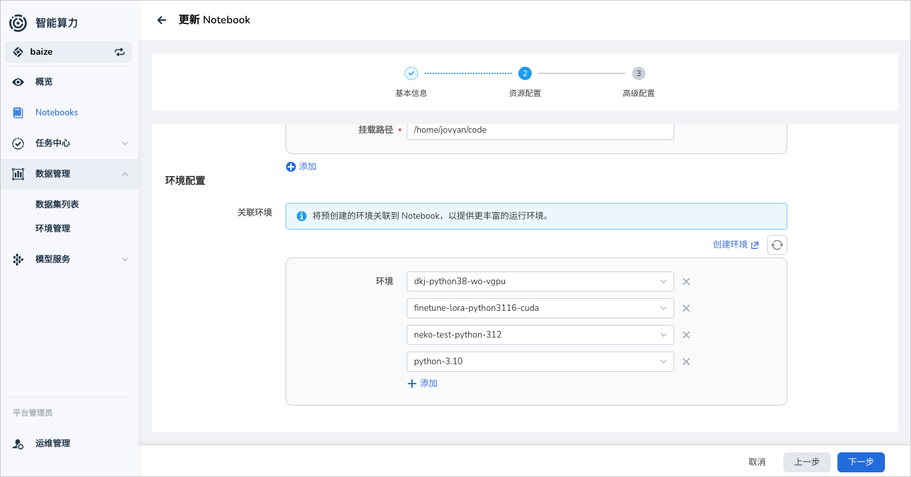
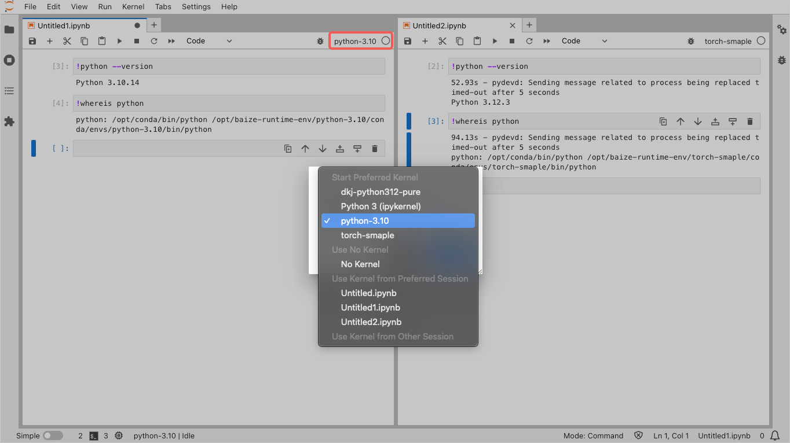

在 Notebook 中使用环境¶
环境管理是 AI Lab 的重要功能之一，通过在 Notebook 中关联对应的环境，可以快速切换不同的环境，方便用户进行开发和调试。
创建 Notebook 时选择环境¶
在创建 Notebook 时，可以选择一个或多个的环境 Envs 。如果没有合适的环境，可以去 环境管理 中创建一个新的环境。

如何创建环境，请参考环境管理。
在 Notebook 使用环境¶
Note
在 Notebook 中，我们同时提供了 conda 和 mamba 两种，用户可以根据自己的需求选择合适的环境管理工具。
AI Lab 中，我们采用了 conda 环境管理工具，用户可以在 Notebook 中通过 !conda env list 命令查看当前环境列表。
(base) jovyan@chuanjia-jupyter-0:~/yolov8$ conda env list
# conda environments:
#
dkj-python312-pure /opt/baize-runtime-env/dkj-python312-pure/conda/envs/dkj-python312-pure
python-3.10 /opt/baize-runtime-env/python-3.10/conda/envs/python-3.10
torch-smaple /opt/baize-runtime-env/torch-smaple/conda/envs/torch-smaple
base * /opt/conda # 当前激活的环境
baize-base /opt/conda/envs/baize-base
这个命令会列出所有的 conda 环境，并在当前激活的环境前面加上一个星号（*）。
JupyterLab 的 Kernel 环境管理¶
在 Jupyterlab 中，我们自动将 Notebook 关联的环境绑定到 Kernel 列表中，用户可以通过 Kernel 快速切换环境。

通过以上办法，可以同时在一个 Notebook 中使用不同编写和调试算法。
Terminal 切换环境¶
AI Lab 的 Notebook 目前也已经支持了 VSCode。
如果您更喜欢在 Terminal 中管理和切换环境，可以安装如下步骤：
在首次启动并使用 Notebook 时，需要先执行 conda init，然后再执行 conda activate <env_name> 切换到对应的环境。
(base) jovyan@chuanjia-jupyter-0:~/yolov8$ conda init bash# 初始化 bash 环境, 仅首次使用需要执行
no change /opt/conda/condabin/conda
change /opt/conda/bin/conda
change /opt/conda/bin/conda-env
change /opt/conda/bin/activate
change /opt/conda/bin/deactivate
change /opt/conda/etc/profile.d/conda.sh
change /opt/conda/etc/fish/conf.d/conda.fish
change /opt/conda/shell/condabin/Conda.psm1
change /opt/conda/shell/condabin/conda-hook.ps1
change /opt/conda/lib/python3.11/site-packages/xontrib/conda.xsh
change /opt/conda/etc/profile.d/conda.csh
change /home/jovyan/.bashrc
action taken.
Added mamba to /home/jovyan/.bashrc
==> For changes to take effect, close and re-open your current shell. <==
(base) jovyan@chuanjia-jupyter-0:~/yolov8$ source ~/.bashrc # 重新加载 bash 环境
(base) jovyan@chuanjia-jupyter-0:~/yolov8$ conda activate python-3.10 # 切换到 python-3.10 环境
(python-3.10) jovyan@chuanjia-jupyter-0:~/yolov8$ conda env list
mamba version : 1.5.1
# conda environments:
#
dkj-python312-pure /opt/baize-runtime-env/dkj-python312-pure/conda/envs/dkj-python312-pure
python-3.10 * /opt/baize-runtime-env/python-3.10/conda/envs/python-3.10 # 当前激活的环境
torch-smaple /opt/baize-runtime-env/torch-smaple/conda/envs/torch-smaple
base /opt/conda
baize-base /opt/conda/envs/baize-base
如果您更喜欢使用
mamba，这里需要使用mamaba init和mamba activate <env_name>。
查看环境中的包¶
通过不同环境管理的一个很重要的功能是，可以在一个 Notebook 中通过快速切换环境，使用不用的包。
我们可以通过下方的命令来使用 conda 查看当前环境中的所有包。
(python-3.10) jovyan@chuanjia-jupyter-0:~/yolov8$ conda list
# packages in environment at /opt/baize-runtime-env/python-3.10/conda/envs/python-3.10:
#
# Name Version Build Channel
_libgcc_mutex 0.1 main defaults
_openmp_mutex 5.1 1_gnu defaults
... # 省略部分输出
idna 3.7 py310h06a4308_0 defaults
ipykernel 6.28.0 py310h06a4308_0 defaults
ipython 8.20.0 py310h06a4308_0 defaults
ipython_genutils 0.2.0 pyhd3eb1b0_1 defaults
jedi 0.18.1 py310h06a4308_1 defaults
jinja2 3.1.4 py310h06a4308_0 defaults
jsonschema 4.19.2 py310h06a4308_0 defaults
jsonschema-specifications 2023.7.1 py310h06a4308_0 defaults
jupyter_client 7.4.9 py310h06a4308_0 defaults
jupyter_core 5.5.0 py310h06a4308_0 defaults
jupyter_events 0.8.0 py310h06a4308_0 defaults
jupyter_server 2.10.0 py310h06a4308_0 defaults
jupyter_server_terminals 0.4.4 py310h06a4308_1 defaults
jupyterlab_pygments 0.2.2 py310h06a4308_0 defaults
... # 省略部分输出
xz 5.4.6 h5eee18b_1 defaults
yaml 0.2.5 h7b6447c_0 defaults
zeromq 4.3.5 h6a678d5_0 defaults
zlib 1.2.13 h5eee18b_1 defaults
更新环境的包¶
目前，可以通过在 AI Lab 的界面中 环境管理 来更新环境中的包。